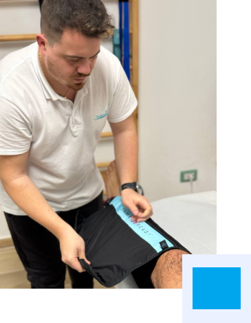

About Me

Sono Gianluigi Sasso, titolare dello studio “Sasso Physioterapy"
Laureato in fisioterapia nel 2016 presso l’universita di siena, ho conseguito il master universitario di primo livello in fisioterapia dello sport nel 2021
“Credo fortemente nella fisioterapia basata sulle evidenze scientifiche”